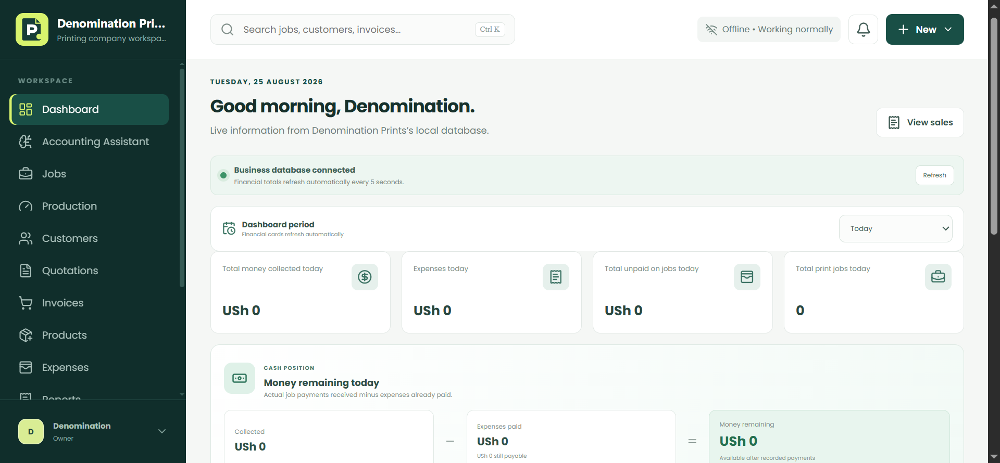
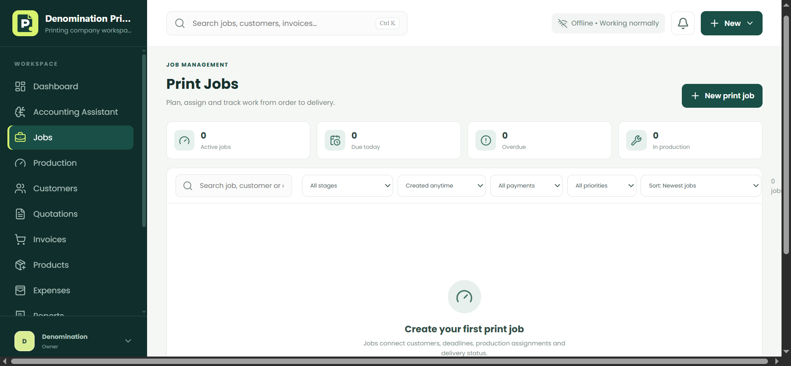
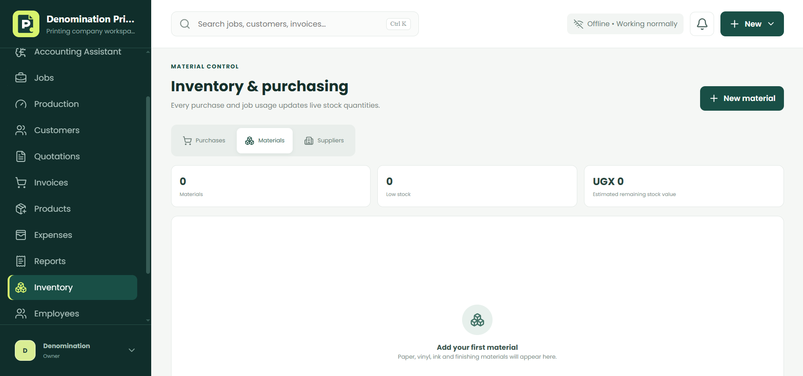
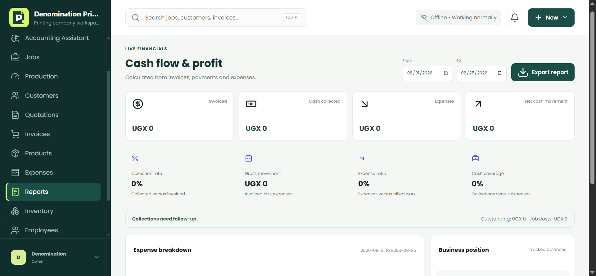
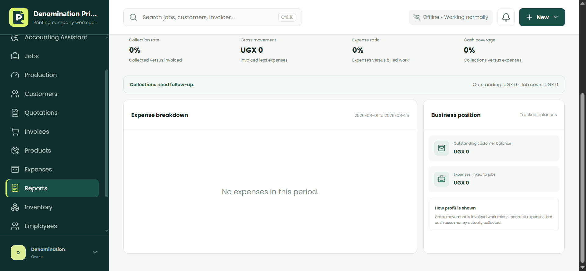
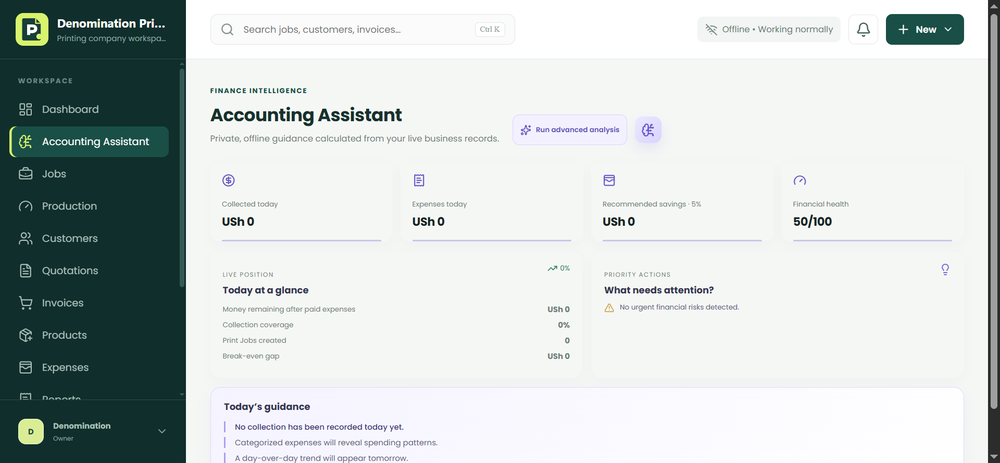

Keep customers, jobs, materials, invoices and payments connected.
PRINTING BUSINESS OPERATIONS
Run your print shop with CONFIDENCE.
Manage customers, jobs, invoices, inventory, expenses and reports in one focused workspace.
Download for Windows



WHY PRINTMANAGER
More control, less confusion.
Use live cash flow, profitability and accounting guidance to act early.
Send polished quotations, invoices and executive reports.
SEE PRINTMANAGER IN ACTION
One workspace. Every operation.

Financial reports
Accounting assistantJobs workflow
Financial reports
COMMON QUESTIONS
FAQs
Yes. Core records remain available without internet access.
New installers are published through GitHub Releases.
Company network features connect authorized workplace computers.
Use local backups and connected recovery options.
Yes. Purchases, stock, metres used and remaining material are connected.
Owners, sales teams, designers, operators, accountants and storekeepers.